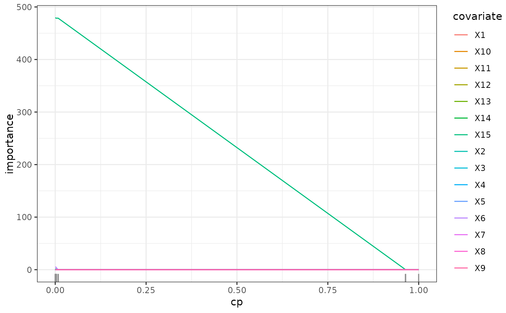
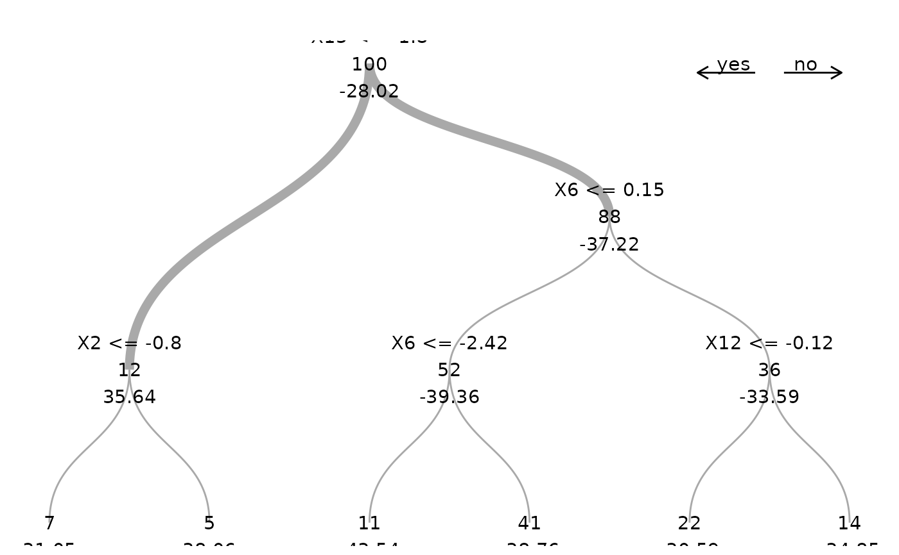
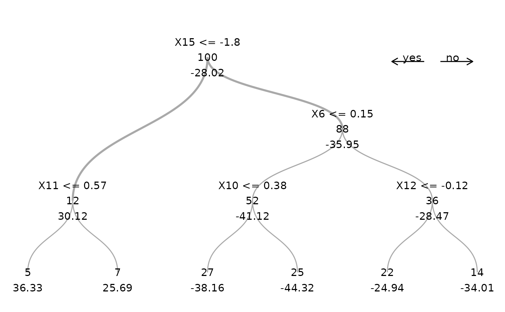

Estimates a regression tree using spectral deconfounding. A regression tree is part of the function class of step functions \(f(X) = \sum_{m = 1}^M 1_{\{X \in R_m\}} c_m\), where (\(R_m\)) with \(m = 1, \ldots, M\) are regions dividing the space of \(\mathbb{R}^p\) into \(M\) rectangular parts. Each region has response level \(c_m \in \mathbb{R}\). For the training data, we can write the step function as \(f(\mathbf{X}) = \mathcal{P} c\) where \(\mathcal{P} \in \{0, 1\}^{n \times M}\) is an indicator matrix encoding to which region an observation belongs and \(c \in \mathbb{R}^M\) is a vector containing the levels corresponding to the different regions. This function then minimizes $$(\hat{\mathcal{P}}, \hat{c}) = \text{argmin}_{\mathcal{P}' \in \{0, 1\}^{n \times M}, c' \in \mathbb{R}^ {M}} \frac{||Q(\mathbf{Y} - \mathcal{P'} c')||_2^2}{n}$$ We find \(\hat{\mathcal{P}}\) by using the tree structure and repeated splitting of the leaves, similar to the original cart algorithm (Breiman et al. 2017) . Since comparing all possibilities for \(\mathcal{P}\) is impossible, we let a tree grow greedily. Given the current tree, we iterate over all leaves and all possible splits. We choose the one that reduces the spectral loss the most and estimate after each split all the leaf estimates \(\hat{c} = \text{argmin}_{c' \in \mathbb{R}^M} \frac{||Q\mathbf{Y} - Q\mathcal{P} c'||_2^2}{n}\) which is just a linear regression problem. This is repeated until the loss decreases less than a minimum loss decrease after a split. The minimum loss decrease equals a cost-complexity parameter \(cp\) times the initial loss when only an overall mean is estimated. The cost-complexity parameter \(cp\) controls the complexity of a regression tree and acts as a regularization parameter.
SDTree(
formula = NULL,
data = NULL,
x = NULL,
y = NULL,
max_leaves = NULL,
cp = 0.01,
min_sample = 5,
mtry = NULL,
fast = TRUE,
Q_type = "trim",
trim_quantile = 0.5,
q_hat = 0,
Qf = NULL,
A = NULL,
gamma = 0.5,
max_candidates = 100,
Q_scale = TRUE,
predictors = NULL
)Object of class formula or describing the model to fit
of the form y ~ x1 + x2 + ... where y is a numeric response and
x1, x2, ... are vectors of covariates. Interactions are not supported.
Training data of class data.frame containing the variables in the model.
Matrix of covariates, alternative to formula and data.
Vector of responses, alternative to formula and data.
Maximum number of leaves for the grown tree.
Complexity parameter, minimum loss decrease to split a node.
A split is only performed if the loss decrease is larger than cp * initial_loss,
where initial_loss is the loss of the initial estimate using only a stump.
Minimum number of observations per leaf.
A split is only performed if both resulting leaves have at least
min_sample observations.
Number of randomly selected covariates to consider for a split,
if NULL all covariates are available for each split.
If TRUE, only the optimal splits in the new leaves are
evaluated and the previously optimal splits and their potential loss-decrease are reused.
If FALSE all possible splits in all the leaves are reevaluated after every split.
Type of deconfounding, one of 'trim', 'pca', 'no_deconfounding'.
'trim' corresponds to the Trim transform (Ćevid et al. 2020)
as implemented in the Doubly debiased lasso (Guo et al. 2022)
,
'pca' to the PCA transformation(Paul et al. 2008)
.
See get_Q.
Quantile for Trim transform,
only needed for trim, see get_Q.
Assumed confounding dimension, only needed for pca,
see get_Q.
Spectral transformation, if NULL
it is internally estimated using get_Q.
Numerical Anchor of class matrix. See get_W.
Strength of distributional robustness, \(\gamma \in [0, \infty]\).
See get_W.
Maximum number of split points that are proposed at each node for each covariate.
Should data be scaled to estimate the spectral transformation?
Default is TRUE to not reduce the signal of high variance covariates,
and we do not know of a scenario where this hurts.
Subset of colnames(X) or numerical indices of the covariates for which an effect on y should be estimated. All the other covariates are only used for deconfounding.
Object of class SDTree containing
Predictions for the training set.
The estimated tree of class matrix.
The tree contains the information about all the splits and the resulting estimates.
Names of the covariates in the training data.
Variable importance of the covariates. The variable importance is calculated as the sum of the decrease in the loss function resulting from all splits that use this covariate.
Breiman L, Friedman JH, Olshen RA, Stone CJ (2017).
Classification And Regression Trees.
Routledge.
ISBN 9781315139470, doi:10.1201/9781315139470
.
Ćevid D, Bühlmann P, Meinshausen N (2020).
“Spectral Deconfounding via Perturbed Sparse Linear Models.”
J. Mach. Learn. Res., 21(1).
ISSN 1532-4435, http://jmlr.org/papers/v21/19-545.html.
Guo Z, Ćevid D, Bühlmann P (2022).
“Doubly debiased lasso: High-dimensional inference under hidden confounding.”
The Annals of Statistics, 50(3).
ISSN 0090-5364, doi:10.1214/21-AOS2152
.
Paul D, Bair E, Hastie T, Tibshirani R (2008).
““Preconditioning” for feature selection and regression in high-dimensional problems.”
The Annals of Statistics, 36(4).
ISSN 0090-5364, doi:10.1214/009053607000000578
.
set.seed(1)
n <- 10
X <- matrix(rnorm(n * 5), nrow = n)
y <- sign(X[, 1]) * 3 + rnorm(n)
model <- SDTree(x = X, y = y, cp = 0.5)
###### subset of predictors
# if we know, that only the first covariate has an effect on y,
# we can estimate only its effect and use the others just for deconfounding
model <- SDTree(x = X, y = y, cp = 0.5, predictors = c(1))
# \donttest{
set.seed(42)
# simulation of confounded data
sim_data <- simulate_data_step(q = 2, p = 15, n = 100, m = 2)
X <- sim_data$X
Y <- sim_data$Y
train_data <- data.frame(X, Y)
# causal parents of y
sim_data$j
#> [1] 15 4
tree_plain_cv <- cvSDTree(Y ~ ., train_data, Q_type = "no_deconfounding")
tree_plain <- SDTree(Y ~ ., train_data, Q_type = "no_deconfounding", cp = 0)
tree_causal_cv <- cvSDTree(Y ~ ., train_data)
tree_causal <- SDTree(y = Y, x = X, cp = 0)
# check regularization path of variable importance
path <- regPath(tree_causal)
plot(path)

tree_plain <- prune(tree_plain, cp = tree_plain_cv$cp_min)
tree_causal <- prune(tree_causal, cp = tree_causal_cv$cp_min)
plot(tree_causal)

plot(tree_plain)

# }